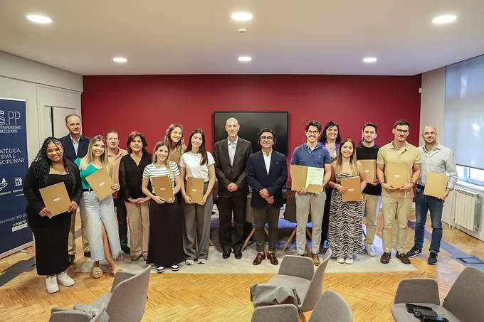

Marketing Digital
Concluí o Mestrado em Marketing Digital no ISCAP com uma classificação final de 17 valores. Esta etapa acompanhou o meu trabalho no Grupo Ramos Ferreira e permitiu-me aprofundar a ligação entre estratégias digitais, comunicação e notoriedade de marca em mercados B2B.
A escolha do Marketing Digital
Prosseguir os estudos para além da licenciatura sempre foi um objetivo meu. A escolha do Mestrado em Marketing Digital surgiu da combinação entre o meu gosto pelo Marketing e a minha aptidão para o digital e para as tecnologias. Quando pensei na área em que queria aprofundar a minha formação, senti que esta era a especialização que fazia sentido para o caminho que queria seguir.
Entre o trabalho e o mestrado
Iniciei o estágio no Grupo Ramos Ferreira antes de entrar no mestrado. Já sabia que queria candidatar-me e senti apoio para o fazer desde o início. A entrada no curso trouxe um misto de orgulho e felicidade, mas também ansiedade perante o desafio de organizar o tempo e conciliar as duas responsabilidades.
Foi uma fase exigente e exaustiva. Houve noites com pouco descanso para cumprir prazos da faculdade e dias de trabalho mais longos para responder aos compromissos da empresa. Conciliar estes ritmos obrigou-me a organizar o tempo, cumprir objetivos e concluir tarefas dentro dos prazos, muitas vezes sob pressão.
Ao mesmo tempo, estudar e trabalhar criou uma ligação muito direta entre a formação e a prática. Aplicava na empresa o que aprendia no mestrado e levava a experiência do mercado para os trabalhos académicos. Essa troca permitiu-me evoluir nos dois contextos e deu sentido ao esforço desta etapa. Apesar do desgaste, o desafio de dar resposta a ambas as responsabilidades reforçou a minha vontade de continuar.
No Grupo Ramos Ferreira, apliquei estratégias de SEO e melhorei a estratégia de conteúdos com base nas aprendizagens do mestrado. Desenvolvi também a minha capacidade de analisar métricas digitais.
Continuar a aprender
No futuro, pondero complementar a minha formação académica com pós-graduações, cursos e outras formações que possam acrescentar valor à minha carreira. Design gráfico e fotografia são duas das áreas em que gostaria de desenvolver conhecimentos.
Estratégias Digitais para a Construção de Brand Awareness: O Caso da Construção e Engenharia.
Da escrita à defesaAnalisei de que forma quatro estratégias digitais se relacionam com a notoriedade de marca e a imagem corporativa no setor da construção e engenharia: SEO, Marketing de Conteúdo, integração Omnichannel e personalização com Inteligência Artificial.
Porque escolhi este tema
A escolha do tema nasceu do meu trabalho no Grupo Ramos Ferreira e das dificuldades que encontrava em reforçar a notoriedade de uma marca neste setor. Queria compreender melhor esse desafio e procurar soluções reais, aplicáveis ao meu contexto profissional. A proximidade ao setor e o acesso a informação e a contactos profissionais facilitaram o desenvolvimento do estudo.
- Respostas recebidas
- 100
- Respostas incluídas na análise
- 57
- Estratégias digitais analisadas
- 4
Como fiz a investigação
Adotei uma metodologia mista, combinando entrevistas semiestruturadas a profissionais do setor e de outros mercados B2B com um questionário online a empresas de construção e engenharia. O questionário foi aplicado entre abril e julho de 2025, após contacto com mais de 500 empresas.
Das 100 respostas recebidas, 57 cumpriram os critérios de inclusão. Foram excluídas 35 respostas de empresas sem departamento ou responsável de Marketing e outras 8 de empresas que não utilizavam estratégias de marketing digital.
A análise cruzou a interpretação temática das entrevistas com estatística descritiva e modelação por equações estruturais por mínimos quadrados parciais (PLS-SEM), realizada no JASP. Esta combinação permitiu relacionar as perceções dos profissionais com os padrões identificados no questionário.
Principais conclusões
- Integração de canais e SEO
No modelo analisado, a integração dos canais digitais e tradicionais apresentou a relação mais forte com a notoriedade da marca, seguida das estratégias de SEO.
- Notoriedade e imagem corporativa
A notoriedade da marca relacionou-se positivamente com a imagem corporativa, reforçando a importância de trabalhar o reconhecimento da empresa junto dos seus públicos.
- Marketing de Conteúdo e personalização com IA
Nesta amostra, os efeitos diretos destas duas estratégias sobre a notoriedade não foram estatisticamente significativos no modelo. Nas entrevistas, porém, os conteúdos sobre projetos foram valorizados pelo seu contributo para a credibilidade e a confiança.
- O papel do marketing no setor
As entrevistas destacaram o reconhecimento da marca, a credibilidade setorial e o employer branding como dimensões relevantes para avaliar a comunicação, num contexto em que as relações profissionais e os processos de contratação têm um peso importante.
Explorar os resultados do modelo
| Relação analisada | β |
|---|---|
| Integração Omnichannel → Brand Awareness | 0,614 |
| SEO → Brand Awareness | 0,338 |
| Marketing de Conteúdo → Brand Awareness | 0,060 |
| Personalização com IA → Brand Awareness | −0,028 |
| Brand Awareness → Imagem corporativa | 0,643 |
O modelo apresentou R² = 0,531 para Brand Awareness e R² = 0,413 para Imagem, correspondentes a 53,1% e 41,3% da variância explicada, respetivamente. Estes valores descrevem o modelo estimado nesta amostra.
Implicações para a prática
As conclusões apontam para prioridades que podem orientar a estratégia de marketing no setor:
- Articular os canais digitais e tradicionais para manter uma comunicação coerente ao longo do contacto com clientes e parceiros.
- Trabalhar o SEO e conteúdos que evidenciem a experiência técnica, os projetos e a capacidade de resposta da empresa.
- Avaliar a comunicação tendo também em conta a notoriedade, a credibilidade e o posicionamento da marca.
Limites do estudo e investigação futura
A análise incidiu sobre uma amostra por conveniência de empresas em Portugal que já tinham departamento ou responsável de Marketing e utilizavam estratégias digitais. Incluiu organizações exclusivamente B2B e outras com atuação B2B e B2C. O estudo não acompanhou os efeitos ao longo do tempo, e os seus resultados devem ser interpretados no contexto desta amostra.
A dissertação propõe aprofundar a investigação noutros mercados, acompanhar a evolução das estratégias ao longo do tempo e explorar o papel dos recursos, da formação das equipas e da maturidade digital.
Da escrita à defesa
Trabalhar no setor ajudou-me a encontrar a pergunta que queria investigar. O difícil foi encontrar tempo para lhe responder por escrito. Conciliar a dissertação com o trabalho na empresa e com a vida pessoal foi exaustivo. Decidi prolongar o prazo de entrega para poder rever o texto com cuidado e entregar a melhor versão que conseguisse.
Na defesa, percebi até que ponto conhecia o meu trabalho. Senti-me à vontade para explicar as escolhas que tinha feito, desde a pergunta inicial até à interpretação dos resultados. Depois de tantas horas a escrever, foi um orgulho poder mostrar o trabalho que estava por trás daquelas páginas. Tive 18 valores na dissertação e saí da defesa com mais confiança em mim próprio.
PDF em português · 106 páginas · documento original
DEMS
Developing E-marketing Skills for the Business Market
Durante o mestrado, fiz parte da Market Masters, uma equipa de cinco estudantes do ISCAP. No DEMS, um projeto Erasmus+ dedicado ao marketing digital das pequenas e médias empresas, preparámos uma proposta para a Advanced Cyclone Systems (ACS). A empresa desenvolve sistemas de separação de partículas para a indústria.
- Classificação da minha equipa
- 3.º
- Equipas participantes
- 41
- Estudantes envolvidos
- 175
Do primeiro clique ao contacto
O desafio era ajudar quem procurava um sistema de ciclones a encontrar a ACS, perceber como a tecnologia se aplicava ao seu caso e pedir mais informação. Analisámos o site e a biblioteca pública de anúncios do LinkedIn. Um anúncio levava o leitor até à newsletter anual, mas não lhe dava uma forma clara de subscrever a edição seguinte. Propusemos uma página de subscrição com um formulário curto: o visitante passaria a ter um próximo passo e a ACS poderia medir as inscrições geradas pela campanha.
Um plano para os primeiros seis meses
Para os primeiros três meses, propusemos uma auditoria ao site, um calendário editorial e campanhas no LinkedIn e no Google. Nos três meses seguintes, a equipa da ACS poderia ajustar as campanhas com base nos dados recolhidos. O aumento do tráfego orgânico e a captação de contactos comerciais qualificados eram objetivos do plano; o relatório não apresenta resultados de implementação.
Explorar as recomendações da equipa
- SEO e desempenho do site
A auditoria com o Lighthouse mostrou que o site podia carregar mais depressa em telemóvel. Recomendámos reduzir o peso das imagens e rever os títulos e o texto da página inicial para responder melhor a pesquisas como «cyclone system».
- Redes sociais e conteúdos
Comparámos a comunicação da ACS com a de três concorrentes. Uma das ideias que propusemos foi «Feedback Talks»: uma rubrica mensal em que um cliente contaria a sua experiência, com excertos do testemunho num carrossel para as redes sociais.
- Email marketing
Propusemos agrupar os contactos por interesses e testar duas versões do assunto de um email. As taxas de abertura e de clique ajudariam a escolher os assuntos e os conteúdos dos envios seguintes.
- Automação e inteligência artificial
Explorámos a utilização de um assistente virtual para responder a perguntas frequentes sobre os sistemas de separação e identificar visitantes que precisassem de falar com a equipa da ACS.
PDF original · 108 páginas · texto em português
